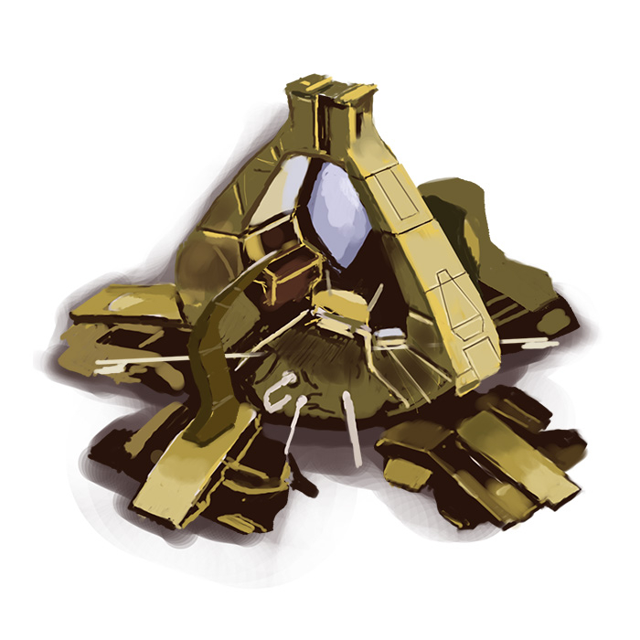

Every Protoss unit from Starcraft: Brood War
StarCraft: Brood War (aka StarCraft 1) is one of the greatest games ever made. Protoss is one of the coolest alien races ever conceived. We did our best to do it justice and unearth a little nostalgia for the boomers.
Be advised that these drawings and their descriptions may be lost on you if you're unfamiliar with StarCraft.

Cost: 💎 50 | ⛽ N/A | 👤 1 — Stats: 🩸 20/20 | ⚔️ 5 | 🥾 moderate
The probe is a junkyard dog. It harvests resources but also scouts, kills stuff with its annoying ranged zap attack, and warps in structures in naughty places. It excels at offensive combat but pops like popcorn if cornered.
You might hear:
"DROOT"
"VWAM"
"BZZZT"


The probe can also make the two sweetest buildings in the Protoss canon: the pylon and the gateway. The pylon is a giant floating crystal that grants power to other Protoss buildings. If the Terrans were smart, they'd have lassoed one and brought it back to earth to feed the entire world. But somehow, this giant diamond only costs as much as two probes (100 minerals) in the game.

The probe can also warp in the gateway—the core unit producing structure that can ultimately make six different combat units. Are you a Gateway Man? We're a Gateway Man.

Cost: 💎 100 | ⛽ N/A | 👤 2 — Stats: 🩸 60/100 | ⚔️ 16 | 🥾 moderate -> fast
The zealot is built like an NFL fullback and struts around looking for a scrap. With a total health pool of 160, he absolutely micturates upon all other early game units.
You might hear:
"HE SAW SHOE"
"GO GOALA"
"I LUV DA COMBAT"
"GEEE HOUSE"
"LAH-SAH SERM"
Cost: 💎 125 | ⛽ 50 | 👤 2 — Stats: 🩸 80/100 | ⚔️ 20 | 🥾 moderate
On top of sweet design and animations, the dragoon is voiced by an intense authorial figure with acute laryngitis at the bottom of a swimming pool.
You might hear:
"GOLASOLENCE"
"SOP TERADAS"
"MAKE USE OF ME"
"LOOK PIE"
"MEATOLLA"

Cost: 💎 50 | ⛽ 150 | 👤 2 — Stats: 🩸 40/40 | ⚔️ N/A | 🥾 slow
High templar cast brutal psionic storms that deal terrible, terrible damage to the enemies beneath them. Without templar, the Protoss would be confused little noodles.
You might hear:
"STEEPED I BE"
"ON SHEED I CALL"
"MY HALF IS SET"
"SHE-TALK"
"SARAH-HAH"
Cost: 💎 100 | ⛽ 300 | 👤 4 — Stats: 🩸 350/10 | ⚔️ 30 | 🥾 moderate
When two templar are low on energy, they take a nap together and wake up feeling like a new person. Just a gorgeous unit to look at.
You might hear:
"THE MERGING IS COMPLETE"
"WEED BURN"
"THROW SO COP"
"REAMING FOCUS"
"POWER OVERHWHELMING"

Cost: 💎 125 | ⛽ 100 | 👤 2 — Stats: 🩸 40/80 | ⚔️ 40 | 🥾 moderate
Never was there both a more hated and beloved unit in a game. Look at that damage number. JUST LOOK AT IT. He deals 40 damage per swipe. That's on a permanently cloaked space ninja.
You might hear:
"YES?"
"MAY I SCHOOL YOU?"
"SO BE IT"
"NEAR MA"
"ZERAH-SKORIDAH"

Cost: 💎 250 | ⛽ 200 | 👤 4 — Stats: 🩸 200/25 | ⚔️ N/A | 🥾 moderate
An exceptional looking blood-soaked cotton ball (NURSE!) and the closest thing to a true hero unit in the game.
You might hear:
"WILL GO"
"MUST HAVE ENERGY"
"THOUGHTS IN CHAOS"
"WE HEAR YOU"
"MUST FEEEEE"

Cost: 💎 25 | ⛽ 75 | 👤 1 — Stats: 🩸 20/40 | ⚔️ N/A | 🥾 slow -> moderate
I will not lose my observer. I will not lose my observer. I will not lose my observer. I will not lose my—FUCK.
You might hear:
"BRAAAA-BA-BALING"
"DEAYA-AWOOP-A-BOOP"
"DUMALADING-DALING-BING-DING"
"CCCCCSHHHHHWWWWW-DING-BING-BING"
Cost: 💎 200 | ⛽ N/A | 👤 2 — Stats: 🩸 60/80 | ⚔️ N/A | 🥾 slow -> fast
This floating vacuum cleaner is the glue in nearly every Protoss strategy. And it's the most boringest unit with no attacks or abilities.
You might hear:
"WVVVVVVVV-BEEP-VVVWWWWWW"
"VWWWWWWWWUURRRR-BOOP"
"WURRRRRRRR-AWWWNUHHH"
"DOOT-DOOT-DOOT-AH-DOOTY-DOOT"

Cost: 💎 200 | ⛽ 100 | 👤 4 — Stats: 🩸 80/100 | ⚔️ 100 | 🥾 very slow
There's something reminiscent of the waddling turtle-people from the beginning of The Fifth Element here. The reaver is an exceptionally slow-moving robotic slug that fires guided plasma bombs out of its mouth. It weighs 10 tons and needs a shuttle to be effective.
You might hear:
"BOYOIYOIYOIYOIY-WOOPY-DOOP"
"DUNUR-NUR-NURRRR-NURRRRRRR"
"NEHH-NEEEENEEEEE-NERRRRRRRHHH"
"BOIYOIDOOT-OOT-OOT"

Cost: 💎 150 | ⛽ 100 | 👤 2 — Stats: 🩸 80/100 | ⚔️ 5 | 🥾 fast
Corsairs fly around in hit-squads phase-zapping overlords and bullying other airborne things—exacting a bit of revenge for all the one-sided games in vanilla Starcraft.
You might hear:
"IT IS A GOOD DAY TO DIE"
"ADUN TORIDAS"
"LETTUCE ATTACK"
"I THOUGHT YOU'D SEE MY WAY"
"EXCELLENT"

Cost: 💎 275 | ⛽ 125 | 👤 3 — Stats: 🩸 100/150 | ⚔️ 28/8 | 🥾 moderate -> fast
Even if the scout feels more like a kid's toy than a proper StarCraft unit, there is something soothing about its little pew-pew attack.
You might hear:
"TELEPORT SUCCESSFUL"
"JOE GUY?"
"LUCAS ACKNOWLEDGED"
"A COLA"
"CHEETOS"

Cost: 💎 100 | ⛽ 350 | 👤 4 — Stats: 🩸 150/200 | ⚔️ 10 | 🥾 moderate
Like a single mother of five, the arbiter does everything: cloaks the ground army; teleports friendly units inside the enemy base; freezes enemy units inside ice cubes that melt very slowly; and even fires a weak little dragoon attack (HEY GUYS, WANNA JUST GIVE IT THE DRAGOON ATTACK? WE GOT LIKE 20 MINUTES TO SHIP THIS GAME).
The arbiter is durable, sweet looking, and clearly piloted by the wisest and most upstanding Protoss ilk.
You might hear:
"KEN, I AGREE"
"WE FEED YOU PRESENTS"
"ENCOST ME"
"YELLUM"
"DEH CHALK IS OLD"

Cost: 💎 300 | ⛽ 250 | 👤 6 — Stats: 🩸 150/300 | ⚔️ 6(x8) | 🥾 slow
The carrier is an iconic unit that remains unique to Starcraft. Protoss players have been winning and losing with the carrier since the game was released in 1998.
You might hear:
"CARRIER HAS ARRIVED"
"NICK KNEW"
"GOUGE YOU"
"A CALLLLL CHOOLA"
"COMMENCING"

Big thanks to tl.net and liquipedia.net for providing unit stat numbers so clearly and accurately. It made our life a lot easier.